Manual de Identidade Visual Inah.pdf.
Introdução
Propósito
Um guia de marca é um conjunto essencial de padrões para apresentar e manter uma marca sólida e consistente, tanto em canais públicos quanto privados. Este documento garante que todas as peças do Inah, de um post a uma faixa de evento, sejam reconhecidas como do mesmo grupo, ampliando o alcance da nossa mensagem junto às famílias, aos jovens e à comunidade.
Sobre a marca
O Grupo Escoteiro Professora Inah de Mello – 147/SP educa crianças e jovens em Santo André desde 1961. Filiado aos Escoteiros do Brasil, atende de 6,5 a 21 anos nos ramos Lobinho, Escoteiro, Sênior e Pioneiro. São mais de 60 anos de história e mais de 2 mil famílias impactadas diretamente, num grupo feito por voluntários.
A marca precisa mostrar o que acontece todo sábado na sede: aventura ao ar livre, acolhimento e responsabilidade com a comunidade. Ela se apoia em três ideias: educação por valores (a Promessa e a Lei Escoteira guiam o que fazemos), aprender fazendo (jogos, acampamentos e trilhas, em contato com a natureza) e comunidade.
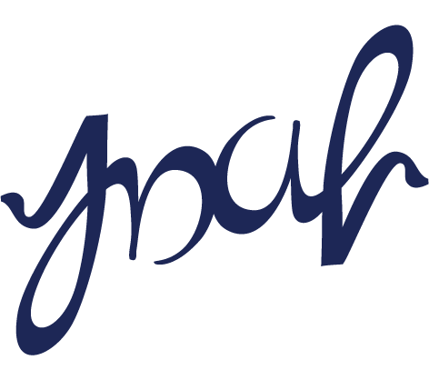
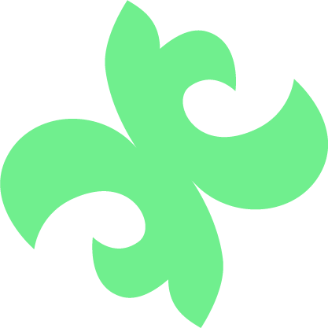
Fotos: Rodrigo Tetsuo Argenton, “Trilha do Lago de Cristal de Paranapiacaba”, CC BY-SA 4.0, via Wikimedia Commons.
Nossa Missão
Contribuir para a educação de crianças, adolescentes e jovens, mediante um sistema de valores, baseado na Promessa e Lei Escoteiras, para que participem na construção de um mundo melhor, no qual se desenvolvam plenamente e desempenhem um papel construtivo na sociedade.
A mesma missão dos Escoteiros do Brasil.
Nossa Visão
Ser um espaço seguro, garantindo suporte adequado do adulto voluntário, em parceria com as famílias, e com recursos necessários, para que os jovens se desenvolvam e atuem no desenvolvimento de suas comunidades.
Nossos valores
Respeito às diferenças, em suas várias dimensões, e defesa permanente dos direitos humanos.
Respeito aos preceitos legais, morais, justos e éticos em todas as ações e relações.
Busca pela eficácia, qualidade e melhoria contínua em todas as ações.
Engajamento de todos e decisões resultantes da reflexão coletiva.
Acolher as diferentes características e necessidades das pessoas.
Novas ideias e soluções criativas para a permanente atualização.
Empenho com a transformação social e a educação infantojuvenil.
Responsabilidade com o meio ambiente, os recursos e a sociedade.
Compartilhar experiências e valorizar o trabalho coletivo.
Ações visíveis e claras na gestão da organização e dos recursos.
Harmonia nas ações e presença unificada dos Escoteiros do Brasil.
Como escrever o nome do grupo
| Situação | Forma | Exemplo |
|---|---|---|
| Documentos oficiais, ofícios, contratos | Grupo Escoteiro Professora Inah de Mello – 147/SP | Cabeçalho de ata, recibo, termo de parceria |
| Marca horizontal e peças de divulgação | Grupo Escoteiro Profª Inah de Mello | Convite da Festa Junina Beneficente |
| Conversa, redes sociais, chamadas | Inah | “Faça parte do Inah!” |
| Endereços digitais | gepim.com.br · @inah.147 | Rodapé de posts e cartazes |
Escreva o número como 147/SP, sem “º”. Evite siglas como “GEPIM” ou “GE Inah” em títulos e textos corridos; GEPIM fica restrito ao endereço do site.
Logo
A marca tem três versões. Todas usam a mesma flor de lis verde e o mesmo azul. O que muda é a forma e o lugar onde cada uma funciona melhor.
Logo principal: marca horizontal
A forma: flor de lis inclinada à esquerda, seguida do número “147/SP – Grupo Escoteiro” e do nome “Profª Inah de Mello”.
O símbolo: a flor de lis é o emblema do escotismo mundial; em Verde Inah, representa a natureza e a aventura ao ar livre.
O estilo: nome em Ubuntu, a mesma família do site, com a flor chapada e sem efeitos. Use sempre que o público não conhece o grupo: documentos, site, faixas, convites e materiais com parceiros.
Variações
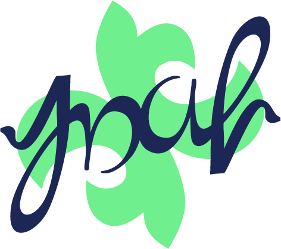
Símbolo Inah · versão afetiva. Lettering manuscrito “Inah” sobre a flor de lis.
Quando usar: para quem já conhece o grupo: camisetas, redes sociais, foto de perfil, brindes e materiais internos. É preferível ao selo.
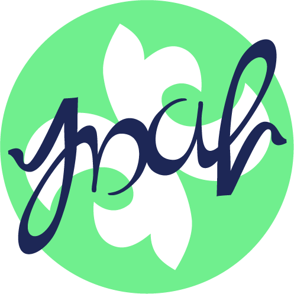
Selo · uso restrito. O símbolo dentro de um círculo verde.
Quando usar: só em formatos que exigem círculo, como bottons, patches e adesivos redondos.
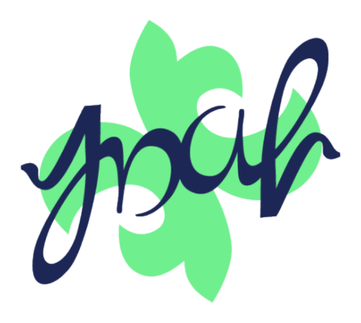
Sticker. Símbolo positivo com contorno branco recortado (x/16).
Quando usar: sobre fotos, degradês, texturas e fundos escuros, e em adesivos recortados.
Peças do símbolo
Use sempre os arquivos originais de cada peça. Não redesenhe, não recombine em outra posição e não troque a flor por outra flor de lis.
Uso do logo
Área de proteção e tamanhos mínimos para manter a legibilidade.
Área de proteção. Na marca horizontal, metade da altura da marca (x/2) livre em todos os lados. No símbolo e no selo, um quarto da largura (x/4). Nenhum texto, borda de página, foto recortada ou outra marca entra nessa área.
Tamanho mínimo. Abaixo desses tamanhos a linha “147/SP – Grupo Escoteiro” e o lettering deixam de ser lidos. Fotos de perfil, que a própria rede reduz, são a única exceção.
Qual versão usar
| Peça | Versão |
|---|---|
| Ofício, papel timbrado, recibo, certificado, site, e-mail, faixa, banner | Marca horizontal |
| Divulgação para quem ainda não conhece o grupo | Marca horizontal |
| Post para a comunidade do grupo, foto de perfil, camiseta, caneca | Símbolo Inah |
| Botton, patch ou adesivo redondos | Selo, só quando o formato redondo é obrigatório |
| Sobre foto, degradê ou fundo colorido | Marca horizontal ou símbolo em tarjeta branca |
| Sobre o Verde Inah | Símbolo com flor branca |
| Fundo escuro | Marca horizontal negativa (preferida); símbolo na tarjeta ou em sticker; ou flor sozinha |
| Carimbo, serigrafia ou bordado de uma cor | Marca horizontal em uma cor |
Versões de cor
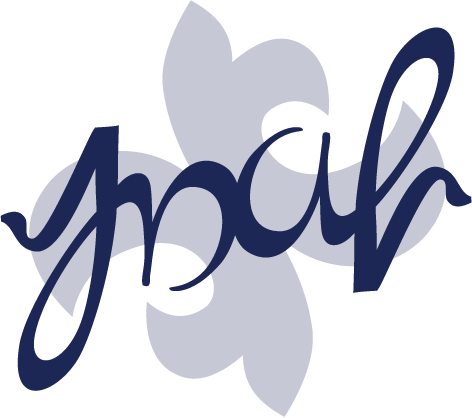
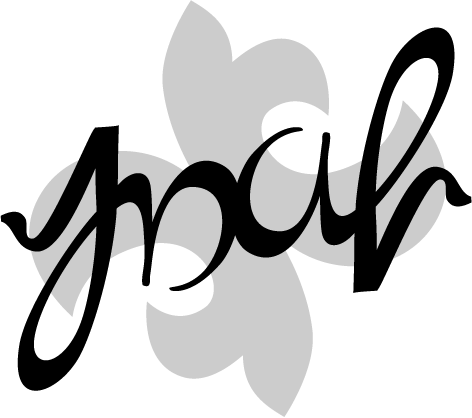
Só a marca horizontal tem versão de uma cor. O símbolo não tem versão negativa: nunca o aplique direto sobre fundo escuro; use a horizontal negativa, a tarjeta branca, o sticker ou a flor sozinha.
Usos incorretos
- Não distorça nem achate.
- Não gire a marca; a inclinação da flor já faz parte do desenho.
- Não troque as cores.
- Não aplique sombra, brilho, contorno ou 3D.
- Não use a positiva solta sobre degradê; use uma tarjeta.
- Não redesenhe o lettering com outra fonte.
- Não separe nem reposicione a flor e o lettering.
- Não use como marca d’água ou com transparência.
Cores
Duas cores fazem a marca: o Azul Inah conduz e o Verde Inah destaca. Em volta delas, quatro paletas complementares dão variedade às peças sem perder a identidade. Os valores CMYK seguem o perfil FOGRA39 (papel couché); confirme sempre com a gráfica.
Cores principais
RGB 29 / 39 / 86
CMYK 98 / 83 / 0 / 55
Cor principal. Lettering, nome do grupo, títulos e fundos.
RGB 112 / 239 / 142
CMYK 45 / 0 / 49 / 0
Cor de destaque. Flor de lis, grafismos e textos sobre o azul. Nunca em texto sobre branco.
Proporção de referência. Em peças de fundo azul, inverta: o azul ocupa a maior área e o branco vira texto.
O verde na impressão: o Verde Inah é mais vivo do que o CMYK consegue reproduzir. Para camisetas, faixas e adesivos, peça à gráfica uma cor especial (Pantone) próxima e aprove uma prova impressa.
Cores secundárias
Cores do mundo escoteiro (a mata, o rio, a fogueira), usadas em fundos, textos, ícones e grafismos. A marca continua sempre nas cores originais.
14 / 20 / 51
97 / 75 / 0 / 83
47 / 111 / 216
83 / 54 / 0 / 0
31 / 181 / 165
72 / 1 / 44 / 2
22 / 121 / 74
86 / 16 / 84 / 29
194 / 240 / 106
31 / 0 / 68 / 0
255 / 212 / 71
4 / 16 / 81 / 0
255 / 122 / 61
0 / 64 / 84 / 0
122 / 78 / 45
36 / 64 / 92 / 43
244 / 232 / 208
7 / 9 / 22 / 0
238 / 245 / 241
7 / 4 / 7 / 0
Texto corrido
0 / 0 / 0 / 80
Fundos e fios
0 / 0 / 0 / 20
Paletas complementares
Escolha uma paleta por peça e não misture duas. Toda peça mantém pelo menos uma das duas cores da marca.
Essencial
Documentos, ofícios, site e tudo o que é institucional. É a paleta padrão.
Mata Atlântica
Acampamentos, trilhas e atividades ao ar livre. Inspirada na mata de Paranapiacaba.
Rio e Céu
Redes sociais e peças para jovens. É a paleta mais luminosa.
Fogo de Conselho
Festas, Fogo de Conselho, aniversário do grupo e eventos à noite.
Combinações e acessibilidade
Contraste medido pelo padrão WCAG. A partir de 4,5:1 o texto é legível em qualquer tamanho; entre 3:1 e 4,5:1, só em títulos grandes; abaixo de 3:1, a combinação serve só para formas e grafismos. Em cada cor, o “Aa” de cima é Azul Inah e o de baixo é branco.
azul 9,8 · branco 1,5
azul 3,0 · branco 4,8
azul 5,6 · branco 2,6
azul 2,6 · branco 5,4
azul 10,0 · branco 1,4
azul 5,5 · branco 2,6
Verde = texto em qualquer tamanho · Âmbar = só títulos grandes · Vermelho = não usar em texto. Azul Inah sobre branco tem 14,2:1; Verde Inah sobre branco, 1,5:1 (nunca em texto).
Tipografia
A Ubuntu é a voz escrita do grupo: é a mesma família do nome na marca horizontal e do site gepim.com.br, e é gratuita no Google Fonts. A Segoe UI entra quando a Ubuntu não estiver instalada. Nas redes sociais, cinco fontes de apoio dão mais expressão aos títulos.
Fontes
Fonte principal e fonte secundária, com pesos e usos.
Composição e hierarquia
Hierarquia definida para documentos A4 e posts de 1080 × 1080 px.
| Ubuntu Bold | Vem ser escoteiro! | 18 pt · 88–120 px |
| Ubuntu Medium | Atividades aos sábados, das 14h às 17h | 13 pt · 44 px |
| Ubuntu Regular | Desde 1961 contribuindo com o desenvolvimento de crianças e adolescentes, com jogos, acampamentos e serviço à comunidade. | 11 pt / 14 pt · 32 px |
| Ubuntu Light | Rua Hungria, 8 – Parque das Nações – Santo André – SP | 8 pt / 10 pt · 24 px |
| Segoe UI Bold | Assembleia de Grupo | Documentos Office |
- Alinhe os textos à esquerda. Centralize só títulos curtos de convites e cartazes.
- Caixa alta só em rótulos curtos, com um pouco de espaçamento entre letras.
- Não use as fontes dos ramos (Hello Headline, Sanremo, SK Boncuk, Misadventures, Afragus) em textos do grupo.
- Não imite o lettering “Inah” com fontes manuscritas. Use o arquivo original.
Fontes de apoio para redes sociais
Uma fonte de título por peça, sempre com a Ubuntu no texto. A Barlow Condensed pode acompanhar para datas e números. Não use fontes de apoio em documentos, ofícios e papelaria.
No Canva: se a fonte não aparecer, baixe no Google Fonts e envie ao Kit de Marca (Brand Hub › Brand Kit › Brand fonts). Envie os arquivos da pasta “static”, um por peso.
Voz
O Inah fala como um escotista que recebe uma família nova na sede: perto, animado e com as informações certas.
Voz da marca
Quatro traços de personalidade guiam tudo o que o grupo escreve.
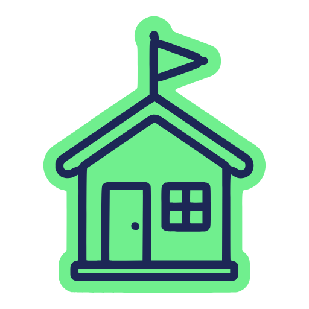
Acolhedor
Convida e explica. Fala com as famílias como quem as recebe na sede.
“Vem ser escoteiro! Traga a família, combinado?!”
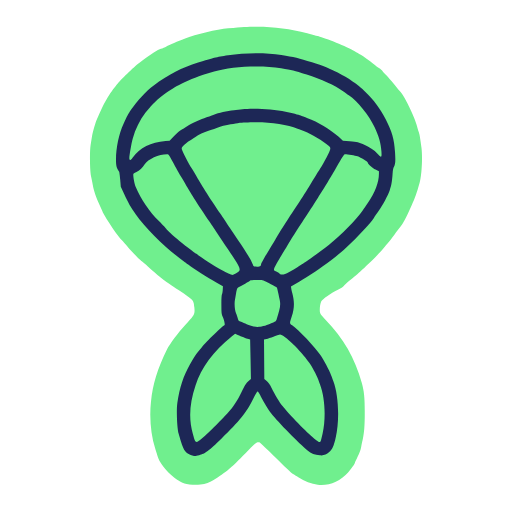
Jovens em primeiro lugar
Quem aparece e quem faz são os jovens. Os voluntários apoiam.
“Os seniores e as guias acamparam e subiram a trilha até o mirante.”
Prático
Toda chamada responde o quê, quando, onde e como participar.
“As atividades são aos sábados, das 14h às 17h, na nossa sede.”
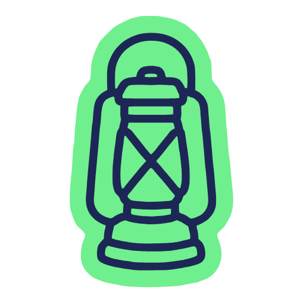
Transparente
Prestação de contas, assembleias e planejamento são públicos e claros.
“Confira o Balanço Financeiro 2023 no site.”
Variações de tom
A voz é a mesma; o tom, a formalidade e o nome do grupo mudam conforme o canal e o público.
| Canal | Tom | Exemplo |
|---|---|---|
| Documentos oficiais ofícios, atas, recibos, parcerias | Formal e claro. Nome completo do grupo; Segoe UI ou Ubuntu; sem degradês. | “O Grupo Escoteiro Professora Inah de Mello – 147/SP convida as famílias para a Assembleia de Grupo.” |
| Redes sociais @inah.147 · /Inah147 | Animado e próximo. “Inah”, frases curtas, jovens em ação. | “Vem ser escoteiro! Crianças e jovens de 6,5 a 21 anos. Sábados, das 14h às 17h, na nossa sede.” |
| Convites e eventos | Caloroso e prático: o quê, quando, onde. | “Festa Junina do Inah. Sábado, a partir das 15h, na sede. Traga a família!” |
| WhatsApp e conversa (11) 4475-1355 | Acolhedor e direto, como um escotista na porta da sede. | “Oi! As atividades voltam neste sábado, às 14h. Até sábado!” |
| Prestação de contas | Transparente e objetivo, com o caminho para o documento. | “Confira o Balanço Financeiro 2023 no site gepim.com.br.” |
Escreva assim
Grafias do grupo
| Escreva | Observação |
|---|---|
| Viver Juntos · Melhor Possível · Sempre Alerta · Servir | Lemas com iniciais maiúsculas |
| Ramo Lobinho, Tropa Escoteira, Tropa Sênior, Clã Pioneiro | Nomes de ramos e seções com maiúscula |
| lobinhos e lobinhas, meninos e meninas | Linguagem que inclui todos |
| seniores e guias | Os jovens do Ramo Sênior |
| escotista, voluntário | Para os adultos do grupo. Todos são voluntários. Evite “chefe” |
| Profª | Com “ª” sobrescrito, como na marca |
Fotografia
Quando a foto é o assunto da peça, ela mostra jovens de verdade fazendo coisas de escoteiro. Paisagens da mata, do rio e da trilha servem como fundo.
Trilha do Lago de Cristal, rio e cachoeira em Paranapiacaba, distrito de Santo André. Fotos de Rodrigo Tetsuo Argenton, CC BY-SA 4.0. Ao usar, mantenha o crédito.
Diretrizes gerais
Prefira
- Jovens em ação: jogos, pioneirias, trilhas, serviço à comunidade.
- Momentos espontâneos, com rostos e expressões.
- Lenço e uniforme visíveis, para que se reconheça o escotismo.
- Natureza real como fundo, de preferência onde o grupo acampa.
Evite
- Fotos posadas ou coreografadas.
- Close de mãos, pés ou objetos sem pessoas.
- Grupos parados, cansados ou de costas.
- Mais adultos do que jovens em cena.
Tratamento: para escrever sobre uma foto, aplique por baixo do texto uma sombra em degradê do Azul Inah, de 90% a 0%. A marca entra sobre foto numa tarjeta branca ou como sticker, sem escurecer a imagem.
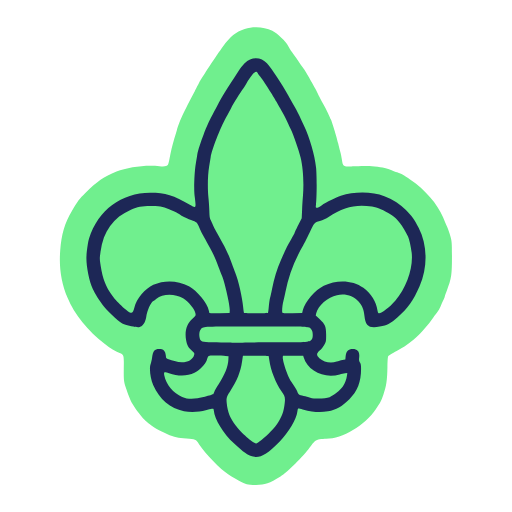
Pessoas
Jovens são os protagonistas. Publique fotos de jovens apenas com autorização de uso de imagem assinada pelos responsáveis e, em posts públicos, não identifique jovens pelo nome completo.
Atividades
Acampamentos, trilhas, jogos e fogo de conselho, registrados em ação, com o grupo em movimento.
Lugares
A sede e a natureza real onde o grupo acampa, como a mata de Paranapiacaba. Servem como fundo para texto e marca.
Grafismos
A flor de lis do símbolo também trabalha sozinha, como grafismo. Junto com degradês, fitas e texturas, ela dá unidade às peças sem repetir o logotipo.
Flor sangrada. Uma por peça, ocupando pelo menos um terço da largura e saindo pela borda. Verde sobre o azul; azul sobre o verde. Texto nunca passa por cima da flor.
Fitas. Faixas curvas em degradê representam a trilha. Sangram pela borda, no máximo três por peça. Fitas-título levam frases de até cinco palavras em Ubuntu Bold ou Barlow Condensed, caixa alta.
Regras
- Degradê só entre cores vizinhas: verde para azul, amarelo para verde, amarelo para laranja.
- Teste o contraste do texto no ponto mais claro que fica atrás dele.
- Uma textura por peça; padrão de flores sempre na mesma inclinação.
- Movimento: as fitas sugerem caminho; em vídeo, prefira entradas suaves seguindo a curva.
- Degradê dentro da marca, da flor ou do lettering.
- Degradê em textos pequenos e em documentos como ofícios.
- Misturar cores opostas no mesmo degradê, como verde com laranja.
- Espelhar, girar ou aplicar transparência na flor.
Ícones
Ícones próprios do grupo para sinalizar temas, seções e listas. Cada ícone é um desenho de linha contínua em Azul Inah, com traço de mão e cantos arredondados, sobre uma mancha de cor que acompanha o desenho, como um adesivo.
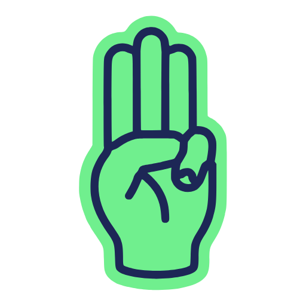
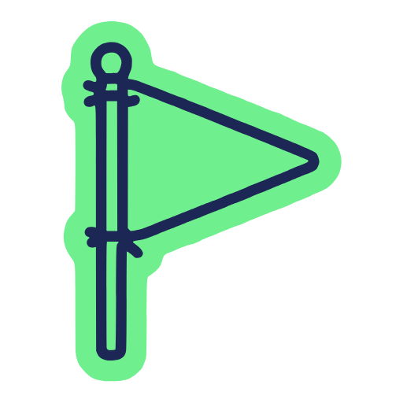
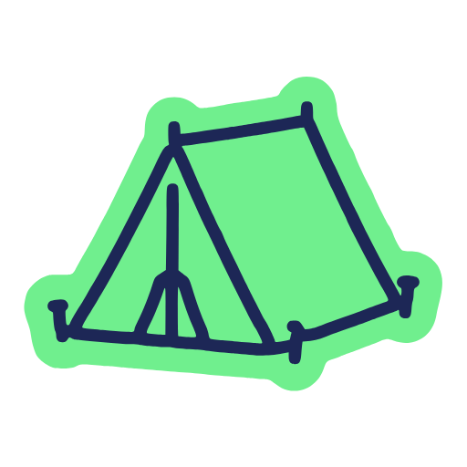
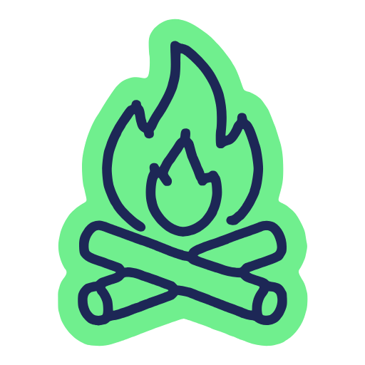
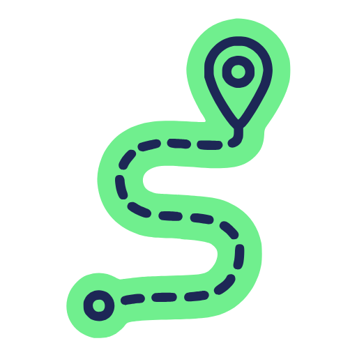
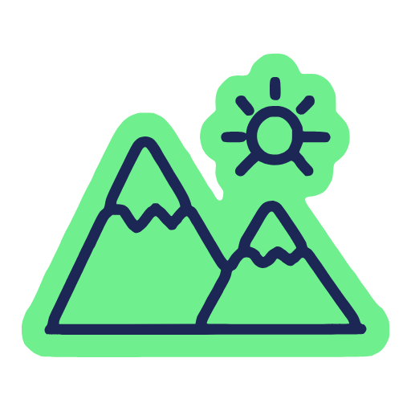
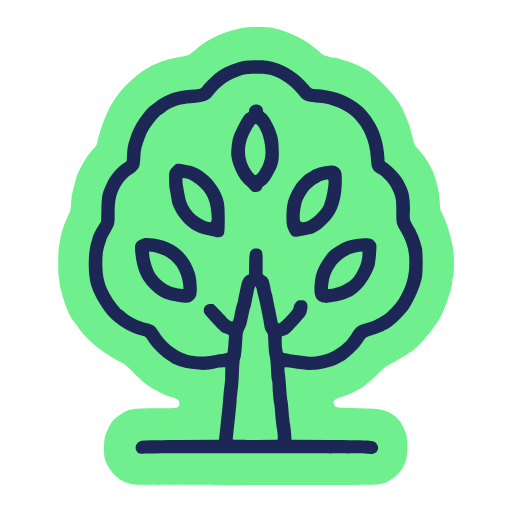
Versões e cores
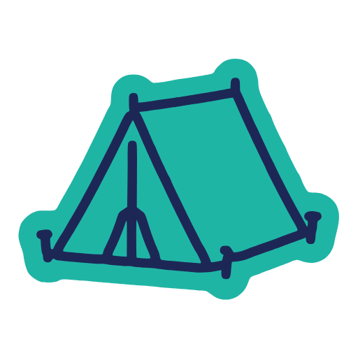
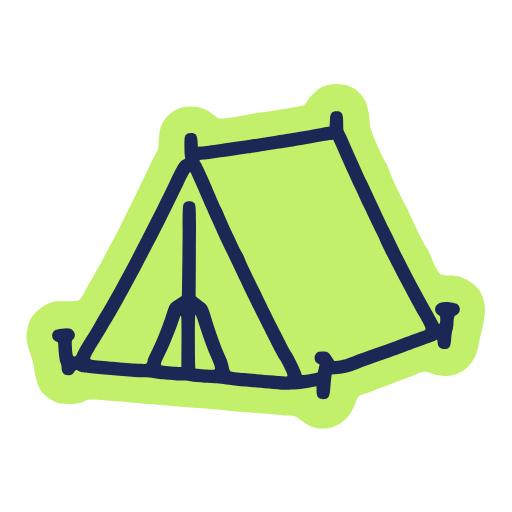
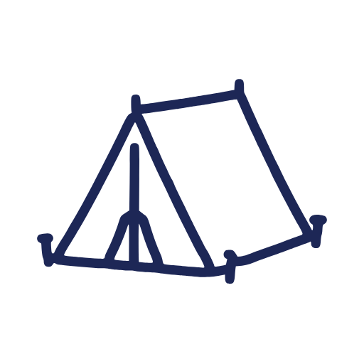
| Item | Regra |
|---|---|
| Traço | Linha contínua em Azul Inah, com 2,7% do maior lado do ícone. Pontas e cantos arredondados. Sem perspectiva, sombra ou degradê. |
| Mancha | Uma cor só, acompanhando o contorno com borda de cerca de 5%. Verde Inah por padrão; Verde Folha, Rio ou Azul Céu nas paletas complementares. |
| Quadro | 960 × 960, ícone centralizado com 860 no maior lado. Sempre em vetor (SVG). |
| Tamanhos | Mínimo de 32 px (padrão) e 24 px (linha). Na impressão, 8 mm e 6 mm. |
| Combinação | Numa peça, todos os ícones na mesma versão, cor e tamanho. Não misture com emojis ou outros estilos, nem use um ícone no lugar da marca. |
Gráficos
Use o Azul Inah para títulos, eixos e séries principais. Reserve o Verde Inah para destacar um dado importante, sempre com rótulo. Combine cada cor com rótulos, marcadores ou padrões: nunca transmita significado só pela cor.
Cores para dados
Até 8 categorias, nesta ordem, mantendo a mesma ordem na legenda e no gráfico. Valores ordenados: escala do Azul 100 ao Azul 900. Valores divergentes: Azul Céu (abaixo), Areia (centro) e Laranja Fogueira (acima).
Tipos de gráfico
Os valores a seguir são fictícios e servem apenas para mostrar como aplicar as cores.
Gráfico de barras
Para comparar quantidades entre categorias: jovens por ramo, presença por atividade. Uma série em Azul Inah; destaque um único valor em Verde Inah, com rótulo.
Gráfico de rosca
Para partes de um total, como a divisão do orçamento de um evento. Poucas fatias, legenda completa e porcentagens visíveis; não use para comparar valores muito próximos.
Gráfico de linhas
Para mostrar evolução ao longo do tempo, como participação mês a mês. Cada série combina cor, marcador e nome no fim da linha.
- Mantenha contraste entre dado e fundo; para texto, o mínimo é 4,5:1.
- Confira o gráfico em escala de cinza e, se possível, num simulador de daltonismo.
- Mais de oito categorias: agrupe ou use rótulos diretos em vez de acrescentar cores parecidas.
Ramos e outras marcas
Cada ramo tem marca, cores e lettering definidos pelos Escoteiros do Brasil. O Inah usa essas marcas como recebidas e assina junto.
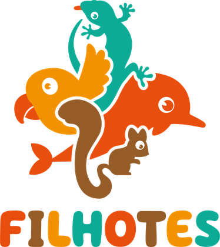
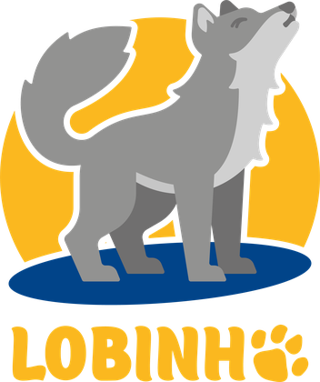
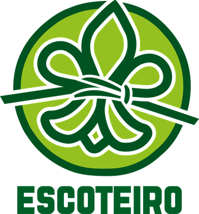
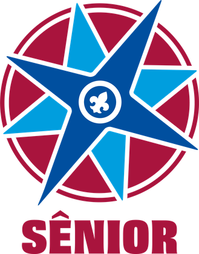
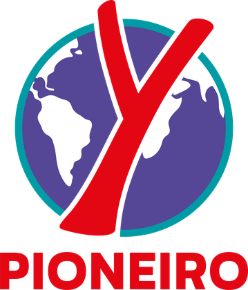
- Peças de um ramo usam a marca e a paleta daquele ramo; a marca horizontal do Inah entra no rodapé, como assinatura.
- Em peças do grupo todo, as marcas dos ramos aparecem lado a lado, na mesma altura e na ordem das idades. Mínimo de 1,2 cm.
- Não recolora a marca de um ramo com as cores do Inah nem misture paletas de ramos diferentes.
Com os Escoteiros do Brasil
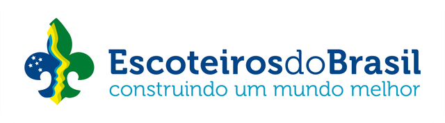
Inah à esquerda, fio Cinza 20, Escoteiros do Brasil à direita, com a mesma altura visual. Em peças com parceiros: “Realização” (Inah e Escoteiros do Brasil) primeiro, depois “Apoio”, com marcas de parceiros nunca maiores que a do Inah. Na comunicação, o nome é Escoteiros do Brasil, nunca “União dos Escoteiros do Brasil”.
Aplicações da marca
Esta seção junta todos os elementos em peças reais que o grupo produz com frequência: um repertório visual de como aplicar a marca com consistência.
Aplicações digitais
147/SP · Escoteiros do Brasil
Sábados, 14h às 17h · Santo André
gepim.com.br
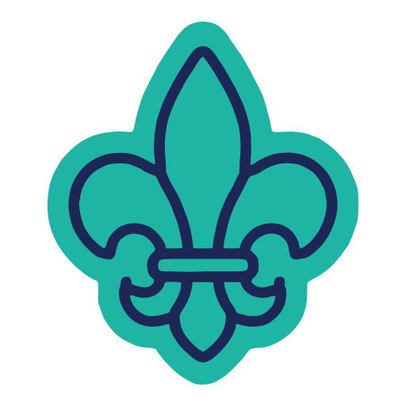
Ramos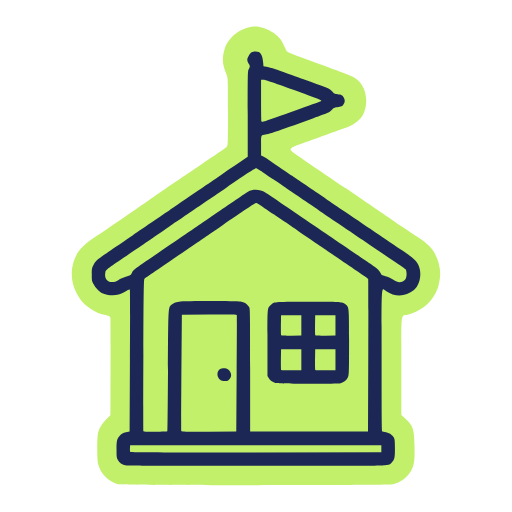
Sedeescoteiro!
fazendo
1961
Grupo Escoteiro Professora Inah de Mello – 147/SP
(11) 4475-1355 · gepim.com.br · @inah.147
À esquerda, post sobre textura: curvas de nível sobre o Azul Inah, com o sticker no canto. À direita, assinatura de e-mail em Segoe UI com a marca horizontal a 200 px, o mínimo digital.
Aplicações impressas
Faixa de evento 3 × 1 m. Foto real com sombra em degradê azul, título em Barlow Condensed e Inah + Escoteiros do Brasil numa tarjeta só, saindo pela base.
gepim.com.br
Cartão de visita 90 × 50 mm. Frente azul com a flor sozinha; verso com a marca horizontal. Nome em Ubuntu Bold, cargo em Light.
Santo André, 6 de outubro de 2026
Prezadas famílias,
Corpo de texto em Ubuntu Regular 11 pt com entrelinha de 14 pt, alinhado à esquerda. A marca fica no topo à esquerda, com no máximo 100 × 25 mm.
Sempre Alerta,
Nome Sobrenome
Cargo no grupo
Rua Hungria, 8 – Parque das Nações – Santo André – SP
gepim.com.br · @inah.147
Papel timbrado A4. Segue o modelo para unidades locais dos Escoteiros do Brasil. Sem degradês.
Outras aplicações
Crianças e jovens de 6,5 a 21 anos.
Sábados, das 14h às 17h, na nossa sede.
Cartaz ou carrossel de divulgação: marca horizontal para quem ainda não conhece o grupo, título curto e chamada com o endereço do site. Também valem camisetas com o símbolo, adesivos com o sticker e bottons com o selo.